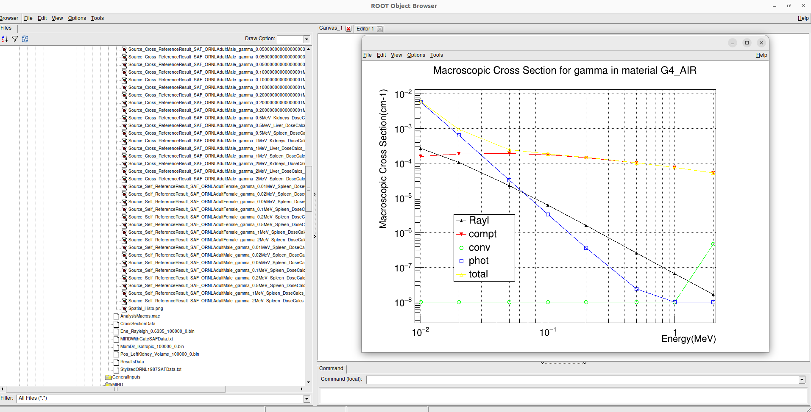

DoseCalcs-Core Commands
To Build Materials
The materials are created using four commands. The elements are set before the materials are formed. Another option to create materials directly is to use the NIST material database. In fact, material construction is required to build world volume, voxelized (VOX) and tetrahedral (TET) volumes, STL volume, and Geant4 standard solids. Except for C++, TEXT and GDML geometry methods, which use all geometry and material data from the C++, TEXT or GDML file, including the world.
Once a material is created and used in volume creation, regardless of how it was created (by GDML, TEXT, C++ or command method), it can be used for the next volumes just by setting its name.
/MaterialData/createElement [Number Z] [Number A] [Element Name]
ex : /MaterialData/createElement 8 16.02 Oxygen
/MaterialData/createMaterial [Material Name] [Material ID] [Number Of Elements] [Density] [Density Unit] [Element Accumulation by fraction (frac) or Number (Numb)]
ex : /MaterialData/createMaterial CO2 1 2 1.0 g/cm3 numb
/MaterialData/AddElements [Element Name1] [fraction(or number)] [Element Name2] [fraction(or number)] ...
ex : /MaterialData/AddElements Carbon 1 Oxygen 2
/MaterialData/setNistMaterialNameAndID [NIST Material Name] [Material ID]
ex : /MaterialData/setNistMaterialNameAndID G4_AIR 1
To Set Geometry Symbol
The geometry symbol is used to characterize the results in the result file. Note that a value is localized in the result file by geometry symbol, radionuclide or particle, quantity, source region, target region (and energy for particle). The default value is phantom0.
/GeometryData/setGeometrySymbol [GeometrySymbol]
[GeometrySymbol] : can be any name without spaces.
To Construct Volumes
To create simulation geometry using a single method, such as TET, VOX, GDML, TEXT, or C++, all volumes, including the world, should be defined in the method-specific file; however, when using multiple methods, the world volume should be created using commands, and the geometry file for each volume should be set to append it to the simulation geometry.
Creating World Volume
/GeometryData/createWorld [World Volume Name] [Material Name] [is Sensitive Detector! (yes or no)] [X Y Z half size] [Length Unit]
ex : /GeometryData/createWorld World G4_AIR yes 200. 200. 200. cm
As well, the world volume can be imported from GDML, TEXT or C++ format files using /GeometryData/createVolume command (Creating Volumes).
Creating Solids
General Command :
/GeometryData/createSolid [Solid Type] [Solid Name] [Solid Parameters] [Length Unit] [Angle Unit]
The next solid types require firstly, the World volume construction. which is done by /GeometryData/createWorld command.
Box
/GeometryData/createSolid [Solid Type] [Solid Name] [X Y Z half size] [Length Unit] [Angle Unit]
Tubs
/GeometryData/createSolid [Solid Type] [Solid Name] [Rmin Rmax Dz SPhi DPhi] [Length Unit] [Angle Unit]
CutTubs :
/GeometryData/createSolid [Solid Type] [Solid Name] [Rmin Rmax Dz SPhi DPhi] [Length Unit] [Angle Unit]
Cons
/GeometryData/createSolid [Solid Type] [Solid Name] [Rmin1 Rmax1 Rmin2 Rmax2 Dz SPhi DPhi] [Length Unit] [Angle Unit]
Para
/GeometryData/createSolid [Solid Type] [Solid Name] [Dx Dy DZ Alpha Theta0 Phi0] [Length Unit] [Angle Unit]
Trd
/GeometryData/createSolid [Solid Type] [Solid Name] [Dx1 Dx2 Dy1 Dy2 Dz] [Length Unit] [Angle Unit]
Sphere
/GeometryData/createSolid [Solid Type] [Solid Name] [Rmin Rmax SPhi DPhi STheta DTheta] [Length Unit] [Angle Unit]
Orb
/GeometryData/createSolid [Solid Type] [Solid Name] [Rmax] [Length Unit] [Angle Unit]
Torus
/GeometryData/createSolid [Solid Type] [Solid Name] [Rmin Rmax Rtor SPhi DPhi] [Length Unit] [Angle Unit]
Ellipsoid
/GeometryData/createSolid [Solid Type] [Solid Name] [xSemiAxis ySemiAxis zSemiAxis] [Length Unit] [Angle Unit]
Union
/GeometryData/createSolid [Solid Type] [Solid Name] [First Solid Name] [Second Solid Name] [Solid Relative Translation] [Solid Relative Rotation] [Length Unit] [Angle Unit]
Intersection
/GeometryData/createSolid [Solid Type] [Solid Name] [First Solid Name] [Second Solid Name] [Solid Relative Translation] [Solid Relative Rotation] [Length Unit] [Angle Unit]
Subtraction
/GeometryData/createSolid [Solid Type] [Solid Name] [First Solid Name] [Second Solid Name] [Solid Relative Translation] [Solid Relative Rotation] [Length Unit] [Angle Unit]
The user requires two solids to construct the third, which can be a union, intersection, or subtraction of the two solids.
Creating Volumes
Import world volume from GDML, TEXT formats or by C++ code
/GeometryData/createVolume [World.c++ Or /../../World.geom /../../World.gdml]
To construct world using C++, GDML and TEXT format files, this file must contain the world physical volume and all daughters volumes, which means DoseCalcs will take the full geometry from this file rather than having to construct world individually by command.
In the G4TCPPGeometryFormat::ConstructPhysicalVolumes() function block, the world physical volume is built using C++ code. The user must use the C++ Geant4 syntax to code the world physical volume as well as all daughters volumes.
The name of the world volume is always “World”, and it is this name that is used when assigning a new volume to the world as a mother volume by setting the mother volume name parameter to “World”.
Import logical volume from GDML file
/GeometryData/createVolume [/../../VolumeName.gdml Volume File Path] [Volume Mother Name] [X Y Z Position] [X Y Z Rotation] [Length Unit] [Angle Unit]
This command does not need the /GeometryData/createSolid or any built material.
Import logical volume from TEXT file
/GeometryData/createVolume [/../../VolumeName.geom Volume File Path] [Volume Mother Name] [X Y Z Position] [X Y Z Rotation] [Length Unit] [Angle Unit]
The logical volume data is read from a C++, GDML and TEXT format file without the requirement for /GeometryData/createSolid. The shape, rotation, position, and material data of a volume are described in the C++, TEXT or GDML format according to the format syntax. Then, to create physical volume, specifies position relative and relative rotation to the mother volume.
Construct logical volume by C++ code
/GeometryData/createVolume [VolumeName.c++] [Volume Mother Name] [X Y Z Position] [X Y Z Rotation] [Length Unit] [Angle Unit]
Import solid data from STL file
/GeometryData/createVolume [.stl Solid File Path] [Volume Material Name] [Volume Mother Name] [X Y Z Position] [X Y Z Rotation] [Length Unit] [Angle Unit]
Construct volume using created solid
/GeometryData/createVolume [Solid name] [Volume Material Name] [Volume Mother Name] [X Y Z Position] [X Y Z Rotation] [Length Unit] [Angle Unit]
Using the /GeometryData/createSolid command to create a solid, filling it with the specified material to create a logical volume, and then giving position and rotation relative to the mother volume to construct a physical volume.
Following the creation of the world, the user can build additional volumes, in which materials and volumes created previously in GDML, TEXT, STL, command, or C++ formats can be used by just changing the name of the material or volume.
Except for files containing world volumes, the file name should match the logical volume name set in C++, GDML and TEXT. The volume name will be the same as the solid file name for STL file. It should be noted that the macros file will use the logical volume name as the name.
Voxelized Geometry
/CreateVolume/ is the main command for specifying the voxelized method to be used, with the first parameter set to VOXEL, VoxIDs, or DICOM.
The VOXEL method is used to create a basic voxelized geometry. Using the four mentioned commands, the user may create voxelized phantom data, where the user must give the region sizes limits as well as the material ID from the material list that will be used to fill the region voxels. To put it another way, the user attaches his or her own materials to the region voxels.
/GeometryData/createVolume VoxIDs [Materials IDs file path]
[Materials IDs file path] : The path of the file containing a matrix of NX-NY-NZ material ID of defined phantom regions.
Aside from the voxel data command, the path of voxel material IDs file must be given in the VoxIDs method, which is the second parameter of the /CreateVolume command. With this voxelized method, the user must create materials and associate a unique ID that is defined in the materials IDs file; this ID will be used in region voxels selection, which is done by setting the region data with the /GeometryData/setVoxelizedRegionData command, which selects all voxels of the specified data to be belonged to the region name as specified by the user. Selecting voxels based on density interval variable is not suggested, since all materials supplied by IDs in the file were built with their respective densities by the user. By locating the box bounded by size limits, this box holds voxels that will be filtered by material ID. The material ID is then sufficient, and choosing a density interval can ignore the material ID option.
/GeometryData/setVoxelsData [Voxels-Number-X -Y -Z] [Parametrisation] [Default material] [Half-Dimension-X -Y -Z] [Length Unit]
[Voxels-Number-X -Y -Z] : Number of voxels in X, Y and Z axis
[Parametrisation] : can be 0 for Phantom parametrisation or 1 for phantom nested paramerization
[Default material] : the default
[Half-Dimension-X -Y -Z] :
[Length Unit] : length unit of the voxel half dimension
/GeometryData/setVoxelsData 254 127 222 1 G4_AIR 1.06857 1.06857 4 mm/GeometryData/createVolume DICOM
For DICOM method, additional commands are used to specify some parameters, but first, the user have to build materials each with a specific density, then order materials according to the density values with /setMaterialsOrdered, the command take the materials names as parameters, ordered incrementally by density (first material is one with low density), a density interval will be created for each material (i.e. the first material density interval will be from 0 to its density, for second material will be from first material density to its density etc.). As well, attaching CT number for each density value by /setCTDensity command, take as first parameter CT number, and second density val, these values are used in the conversion from the CT number to the density while reading Dicom file. Note that the pixel can present a density value that is not defined in density list given by the user while constructing material, in this case, a new material with a new density and ID will be generated and added to the list of materials, the new material is chosen according to the location of pixel density in the density interval.
/GeometryData/setMaterialsOrdered [Material Name1] [Material Name2] ... [Material NameN]/GeometryData/setCTDensity [CT Value] [Density Value]
This command should be set a number of times according to the CT numbers intervals.
Another useful command is /setPixelsCompression, which is used to compress xy voxels, in order to reduce pixels number in slices.
/GeometryData/setPixelsCompression 4/GeometryData/visualizeVoxelizedPlanes [Plane] [Min Plane ID] [Max Plane ID]
[Plane] can be : all, xy, xz or yz.
[Min Plane ID] : integer value, ID of min plane in selected axis, for example if we choose the Plane xy, the axis will be z. The ID can be from 0 to Number of voxels in the axis (- 1)
[Max Plane ID] : integer value, ID of max plane in selected axis, for example if we choose the Plane xy, the axis will be z. The ID can be from 0 to Number of voxels in the axis (- 1)
The number of voxels in voxelized geometry created with VoxIDs methods might be huge, requiring a high-quality computation resource for visualization. This entails the visualization of voxelized geometry parts (planes), which is aided by the command above.
To visualize just a specific regions:
/GeometryData/visualizeVoxelizedPlanes regions [Region Number N] [Region 1] ... [Region N]
ex : /GeometryData/visualizeVoxelizedPlanes regions 3 Livre Brain Thyroid
To choose voxels based on x, y, and z limits, as well as material IDs and density intervals, to construct a region:
/GeometryData/setVoxelizedRegionData [Region Name] [Min x] [Max x] [Min y] [Max y] [Min z] [Max z] [Material ID] [Min Density] [Max Density] [Density Unit]
[Region Name] : the name to be assigned to the selected voxels, the name is used in the source specification and results
[Min x] and [Max x] : the minimum and maximum limits on x-axis where to search about the specific voxels, the same for y- and z-axis
[Material ID] : the voxels in specified limits will be selected if they present the set material ID
[Min Density] [Max Density] : the voxels in the specified limits and material ID are selected only if the contained material has a density in the set interval
The commend bellow can be set with different syntax, for example: if the limits is all the phantom, there are no needs to set x, y and z limits, setting just “all” instead of [Min x] [Max x] [Min y] [Max y] [Min z] [Max z]. As well for use of material ID and density interval values, the user can set “null” at parameter that won’t be used, an example of this command:
/GeometryData/setVoxelizedRegionData Residual_tissue_head all 116 null null null
Tetrahedral Geometry
/CreateVolume/ is the main command for specifying the tetrahedral method to be used, with the first parameter set to TET.
[.node file path] : The path of .node file.
[.ele file path] : The path of .node file.
The TET method is used to create a tetrahedral geometry. Using three TET commands, the user may create TET phantom data, where the user must give the used materials, phantom size limits, and TET region data.
/GeometryData/createVolume TET [.node file path] [.ele file path]
As an example:
/GeometryData/createVolume TET /home/user/../AF.node /home/user/../AF.ele
To set the TET phantom limits:
/GeometryData/setTETPhantomLimits [Plane] [Min] [Max]
[Plane] can be : all, xy, xz or yz.
[Min] : Min in the selected axis, for example if we choose the Plane xy, the axis will be z.
[Max] : Max in the selected axis, for example if we choose the Plane xy, the axis will be z.
/GeometryData/setTETPhantomLimits xy -5 5
Means that the phantom will be composed of tetrahedrons from -5 mm to 5 mm in the z axis.
To visualize just a specific regions:
.. code-block:
/GeometryData/setTETPhantomLimits regions [Region Number N] [Region 1] … [Region N]
ex : /GeometryData/setTETPhantomLimits regions 3 Liver Brain Thyroid
To create a new region data based on material density:
.. code-block:
/GeometryData/setTETRegionData [Region Name] [Min Density] [Max Density] [Density Unit]
[Region Name] : the name to be assigned to the selected tetrahedrons, the name is used in the source specification and results.
[Min Density] [Max Density] : The tetrahedrons are selected only if the contained material has a density in the set interval.
.. code-block:
/GeometryData/setTETRegionData skeleton 1.3 null g/cm3
In this case, all tetrahedrons with a density greater or equal to 1.3 g/cm3 will be selected to belong to the “skeleton” region.
For VoxIDs and TET methods, the user can use the default regions created based on read material IDs from files “material name as region name”. In this case, the user shouldn’t create new regions, and this is activated by:
/GeometryData/setMaterialNameAsRegionName [yes or no]
To Define Source
The radiation source is made up of five main /SourceData/ commands that provide source parameters including event particle names, initial positions, initial energies, initial momentum directions, and the number of data to generate.
Generation Initial Positions
General Command
/SourceData/setEventsInitialPosData [Length Unit] [Generate Type] [Parameters 1] [Parameters 2] ...
Volume, Voxels, and TET Sources Types
/SourceData/setEventsInitialPosData [Length Unit] Volume [VolumeName1 hx hy hz(surrends box half sizes)] [VolumeName2 hx2 hy2 hz2(surrends box half sizes)] ...
ex : /SourceData/setEventsInitialPosData cm Volume Vol1 4 2 5 Vol2 6 6 10
The region name, as well as the box half dimensions hx, hy, and hz, were passed as parameters. The first parameter is the length unit, followed by the word “Volume,” which indicates that the volume where we wish to create data has non-uniform forms, and finally the source volume name and the associated hx, hy, and hz. Additionally, the command supports multiple source volume data by giving the second source volume name, followed by the matching hx, hy, and hz, and so on… This makes generating initial positions or simulating many sources with a single command easy.
For “Volume” source type:
ex1 : /SourceData/setEventsInitialPosData cm Volume AllRegions 3 Liver Brain Spleen 20 20 90 Brain 6.58 9 6.5 Spleen 3.2 2.3 5.7 Liver 15. 8. 8.
The values “20 20 90” is “Allregions” X, Y, and Y half dimensions, they should not exced the World hammf dimensions.
/SourceData/setEventsInitialPosData [Length Unit] Voxels [VolumeName1] [VolumeName2] ... [VolumeNameN]
ex : /SourceData/setEventsInitialPosData cm Volume Vol1 Vol2 Vol3 Vol4
/SourceData/setEventsInitialPosData [Length Unit] TET [VolumeName1] [VolumeName2] ... [VolumeNameN]
ex : /SourceData/setEventsInitialPosData cm TET Vol1 Vol2 Vol3 Vol4
For “Voxels” and “TET” source types:
ex2 : /SourceData/setEventsInitialPosData cm Voxels AllRegions 3 Liver Brain Spleen Liver Brain Spleen
Other Sources Types
/SourceData/setEventsInitialPosData [Length Unit] Point [SourceName] [x y z]
ex : /SourceData/setEventsInitialPosData cm Point Source1 10 5 8
/SourceData/setEventsInitialPosData [Length Unit] Beam [SourceName] [x y z] [BeamSDev]
ex : /SourceData/setEventsInitialPosData cm Plane Source1 10 5 8 2
/SourceData/setEventsInitialPosData [Length Unit] Plane [SourceName] [x y z] Square [Axis] [HalfX]
ex : /SourceData/setEventsInitialPosData cm Plane Source1 10 5 8 Square X 16
/SourceData/setEventsInitialPosData [Length Unit] Plane [SourceName] [x y z] Rectangle [Axis] [HalfX] [HalfY]
ex : /SourceData/setEventsInitialPosData cm Plane Source1 10 5 8 Rectangle X 11 12
/SourceData/setEventsInitialPosData [Length Unit] Plane [SourceName] [x y z] Circle [Axis] [Radius]
ex : /SourceData/setEventsInitialPosData cm Plane Source1 10 5 8 Circle X 16
/SourceData/setEventsInitialPosData [Length Unit] Plane [SourceName] [x y z] Ellipse [Axis] [HalfX] [HalfY]
ex : /SourceData/setEventsInitialPosData cm Plane Source1 10 5 8 Ellipse X 11 12
/SourceData/setEventsInitialPosData [Length Unit] Surface [SourceName] [x y z] Sphere [Radius]
ex : /SourceData/setEventsInitialPosData cm Surface Source1 10 5 8 Sphere 11
/SourceData/setEventsInitialPosData [Length Unit] Surface [SourceName] [x y z] Ellipsoid [HalfX] [HalfY] [HalfZ]
ex : /SourceData/setEventsInitialPosData cm Surface Source1 10 5 8 Ellipsoid 11 13 5
/SourceData/setEventsInitialPosData [Length Unit] Solid [SourceName] [x y z] Para [HalfX] [HalfY] [HalfZ]
ex : /SourceData/setEventsInitialPosData cm Solid Source1 10 5 8 Para 11 13 5
/SourceData/setEventsInitialPosData [Length Unit] Solid [SourceName] [x y z] EllipticCylinder [HalfX] [HalfY] [HalfZ]
ex : /SourceData/setEventsInitialPosData cm Solid Source1 10 5 8 EllipticCylinder 11 13 5
/SourceData/setEventsInitialPosData [Length Unit] Solid [SourceName] [x y z] Cylinder [Radius] [HalfZ]
ex : /SourceData/setEventsInitialPosData cm Solid Source1 10 5 8 Cylinder 11 13
/SourceData/setEventsInitialPosData [Length Unit] Solid [SourceName] [x y z] Sphere [Radius]
ex : /SourceData/setEventsInitialPosData cm Solid Source1 10 5 8 Sphere 11
/SourceData/setEventsInitialPosData [Length Unit] Solid [SourceName] [x y z] Ellipsoid [HalfX] [HalfY] [HalfZ]
ex : /SourceData/setEventsInitialPosData cm Solid Source1 10 5 8 Ellipsoid 11 13 5
Generation Initial Energies
General Command
/SourceData/setEventsInitialEneData [Energy Unit] [Energy Distribution] [Parameter1] [Parameter2] ...
Mono Distribution
/SourceData/setEventsInitialEneData [Energy Unit] Mono [Mone Energy 1] [Mone Energy 2] ...
ex : /SourceData/setEventsInitialEneData MeV Mono 0.01 0.02 0.015 0.03 0.05 0.1 0.2 0.5 1
Gauss Distribution
/SourceData/setEventsInitialEneData [Energy Unit] Gauss [Gauss SDev] [Gauss Mean 1] [Gauss Mean 2] ...
ex : /SourceData/setEventsInitialEneData MeV Gauss 0.01 1 2 3 4 5 10
Rayleigh Distribution
/SourceData/setEventsInitialEneData [Energy Unit] Rayleigh [Rayleigh Max Energy 1] [Rayleigh Max Energy 2] ...
ex : /SourceData/setEventsInitialEneData MeV Rayleigh 0.5 0.7 0.6
Uniform Distribution
/SourceData/setEventsInitialEneData [Energy Unit] Uniform [Min Energy] [Max Energy 1] [Max Energy 2] ...
ex : /SourceData/setEventsInitialEneData MeV Uniform 6 6.1 6.2 6.3
Spectrum Distribution
/SourceData/setEventsInitialEneData [Energy Unit] Spectrum [Energy1] [Probability1] [Energy2] [Probability2] [Energy3] [Probability3] ...
ex : /SourceData/setEventsInitialEneData MeV Spectrum 0.1 0.2 0.3 0.4 0.7 0.1 1 0.3
File Spectrum Distribution
/SourceData/setEventsInitialEneData [Energy Unit] File [Energy particle-energy-yield file path] ...
[Energy particle-energy-yield file] : the ASCII file should contains, the particles names followed by the absolute yields energies as described in the ICRP publication 107. and example of this file can be downloaded from the link below.
ex : /SourceData/setEventsInitialEneData MeV File /../I131EnergyData.dat
The particle name should be set to the radiotracer name when using the file energy distribution, and the energy that characterizes the radiotracer is regarded the largest energy value in the energy file. This energy will be used to set the radiotracer data and generate the corresponding results.
Generation Initial Momentum Directions(MomDir)
General Command
/SourceData/setEventsInitialMomDirData [Angle Unit] [MomDir Distribution] [Parameter1] [Parameter2] ...
The angle unit is the first parameter, followed by the distribution name and, when necessary, the distribution-related parameters.
Isotropic Distribution
/SourceData/setEventsInitialMomDirData [Angle Unit] Isotropic
ex : /SourceData/setEventsInitialMomDirData degree Isotropic
Uniform Distribution
/SourceData/setEventsInitialMomDirData [Angle Unit] Uniform
ex : /SourceData/setEventsInitialMomDirData degree Uniform
Directed Distribution
/SourceData/setEventsInitialMomDirData [Angle Unit] Directed [Theta] [Phi]
ex : /SourceData/setEventsInitialMomDirData degree Directed 145 30
Setting Events Particle Names
/SourceData/setEventsParticleNameData [Particle1] [Particle2] ...
ex : /SourceData/setEventsParticleNameData gamma e- e+
If the person wants to simulate all radiotracer emitted particles as a source, the radiotracer symbol should be specified in /SourceData/setEventsParticleNameData, along with the particle and energy distribution file using /SourceData/setEventsInitialEneData.
Setting Events Data Number, Activating Data Files Generation
General Command
/SourceData/setSourceGenerationData [how to use events data]
[how to use events data] : can be read, save and generate. The read option necessite the existance of data file named with nomenclature “Ene_EnergyDistribution_Energy_DataNumber_ThreadOrRankID.bin”, “Pos_SourceType_SourceName_DataNumber_ThreadOrRankID.bin” and “MomDir_MomDirDistribution_MomDir_DataNumber_ThreadOrRankID.bin”.
ex : /SourceData/useDataGenerationFiles read
DoseCalcs’ data file nomenclature is based on four main inputs: data type, distribution name, a value associated with this distribution, and the number of events to be generated. As a result, whether the file is created during data generation or read during the simulation process, the file name is built in the same way. This nomenclature is used to identify which data file should be used for simulation and to avoid simulation of data with the same name.
Setting this command activates data generation; data will be generated and stored in data files in generation run mode, and initial data will be read from data files in calculation run mode, where the file name is formed in the same manner as when the file was created. By unsetting these commands, you simply simulate direct event data without having to use data files.
During simulation, each thread or rank reads the data files and fills the position, energy, and momentum arrays with the number of events assigned to it. It reads the required lines from the data files to prevent an event’s simulation from repeating with the same initial data. As a result, the total number of simulated events by all threads should be equal to or lower than the number of lines in the data files. Each line in a data file represents a position, energy, or momentum direction for an event.
Geometry and Source Data Visualization
To visualize the Box that surrend the source region
/SourceData/showSourceBox
The box surrounds the liver organ |
In order to decrease the generation CPU time, the box dimensions for initial positions generation must be such that the box surrounds the source region as precisely as possible. As a result, the user may use the /SourceData/showSourceBox command to see the enclosing box in the full geometry, and then fine-tune the box dimensions before doing any generation or computation tasks. It is the user’s task to ensure that a surrender region exists.
To Visualize generated initial positions
/SourceData/testEventsInitialPositions
The generated events’ initial positions with isotropic distribution in liver |
If the user wants to see the initial positions, they may do so by running the simulation using the command /SourceData/testEventsInitialPositions. This command disables the transport process across the geometry volumes, showing just the initial source points.
These two commands are helpful for ensuring that the starting positions in the specified Region volume are correctly produced.
To visualize just the ineterest geometry regions without containers
/GeometryData/setVolumesVisToNotForced World Trunk Head Legs
Visualization DoseCalcs model of the ORNL adult male phantom with with the not forced volumes: world, trunk, head and legs |
To Define Physics
Setting Physics
General Command
/PhysicsData/setPhysicsData [Physics] [Parameters (for "Construct physics")]
Electromagnetic constructors, hadron constructors, or general factory
/PhysicsData/setPhysicsData [Physics]
ex : /PhysicsData/setPhysicsData EMS3
[Electromagnetic Constructor] parameter can be : for EMS, EMS1, EMS2, EMS3, EMS4, Livermore, Penelope. For hadrons, HADRON_FTFP_BERT, HADRON_FTFP_BERT_ATL, HADRON_FTFP_BERT_TRV, HADRON_QGSP_FTFP_BERT, HADRON_QGSP_BERT, HADRON_QGSP_BERT_HP, HADRON_QGSP_BIC, HADRON_QGSP_BIC_AllHP, HADRON_INCLXX, HADRON_Shielding, HADRON_ShieldingLEND. The EMS3 is used with hadron physics. Or Factory, FACTORY_FTFP_BERT, FACTORY_FTFP_BERT_ATL, FACTORY_FTFP_BERT_TRV, FACTORY_QGSP_FTFP_BERT, FACTORY_QGSP_BERT, FACTORY_QGSP_BERT_HP, FACTORY_QGSP_BIC, FACTORY_QGSP_BIC_AllHP, FACTORY_INCLXX, FACTORY_Shielding, FACTORY_ShieldingLEND.
Construct Electromagnetic Physics
/PhysicsData/setPhysicsData Construct [PhotoElectricEffect Model] [ComptonScattering Model] [GammaConversion Model] [RayleighScattering Model] [ElectronIonisation Model] [ElectronBrem Model] [HadronIonisation Model] [IonIonisation Model]
[PhotoElectricEffect Model] can be : 1 for G4PEEffectFluoModel, 2 for G4LivermorePhotoElectricModel, 3 for G4LivermorePolarizedPhotoElectricModel, 4 for G4PenelopePhotoElectricModel.
[ComptonScattering Model] can be : 1 for G4KleinNishinaCompton, 2 for G4KleinNishinaModel, 3 for G4LowEPComptonModel, 4 for G4LivermoreComptonModel, 5 for G4LivermoreComptonModifiedModel, 6 for G4LivermorePolarizedComptonModel, 7 for G4PenelopeComptonModel, 8 for G4TKleinNishinaCompton.
[GammaConversion Model] can be : 1 for G4BetheHeitlerModel, 2 for G4BetheHeitler5DModel, 3 for G4PairProductionRelModel, 4 for G4LivermoreGammaConversionModel, 5 for G4BoldyshevTripletModel, 6 for G4LivermoreNuclearGammaConversionModel, 7 for G4LivermorePolarizedGammaConversionModel, 8 for G4PenelopeGammaConversionModel.
[RayleighScattering Model] can be : 1 for G4LivermoreRayleighModel, 2 for G4LivermorePolarizedRayleighModel, 3 for G4PenelopeRayleighModel.
[ElectronIonisation Model] can be : 1 for G4MollerBhabhaModel, 2 for G4LivermoreIonisationModel.
[ElectronBrem Model] can be : 1 for G4SeltzerBergerModel, 2 for G4eBremsstrahlungRelModel, 3 for G4LivermoreBremsstrahlungModel, 4 for G4PenelopeBremsstrahlungModel.
[HadronIonisation Model] can be : 1 for G4BetheBlochModel, 2 for G4BetheBlochIonGasModel, 3 for G4BraggIonModel, 4 for G4BraggIonGasModel, 5 for G4IonParametrisedLossModel, 6 for G4AtimaEnergyLossModel, 7 for G4LindhardSorensenIonModel.
[IonIonisation Model] can be : 1 for G4BetheBlochModel, 2 for G4BraggModel, 3 for G4ICRU73QOModel.
ex : /PhysicsData/setPhysicsData Construct 1 2 1 2 1 1 1 1
Setting Cuts in Range and Energy Range Data
Electrons, positrons, gamma - ray, and protons all have cutoffs. To figure out what the cutoff values for the simulated particles should be. The energy cut value is set to the default minimal energy if the distance cut is not passed. If both cuts miss, the default range cut value for electrons and photons is 1 mm, which is translated to the energy threshold according to the material specification.
The secondary particles are simulated as continuous energy loss by the incident particle below a threshold energy defined by setting a cut in range or in kinetic energy; this has no significant effect on the simulation results. Secondary particles are explicitly generated and followed over this level.
If all secondary particles are simulated and tracked, the performance of any Monte Carlo simulation will be low. We employ a cut in range (distance cut) or an energy threshold (energy cut) to minimize simulation duration. The energy threshold in Geant4 can be 1 keV or higher.
/PhysicsData/setCutsInRange [Particle 1] [Range in Cut 1] [Length Unit 1] ... [Particle n] [Range in Cut n] [Length Unit n]
ex : /PhysicsData/setCutsInRange e- 1 mm e+ 1 mm gamma 2 mm proton 1 cm
Four particles can be used (n_max = 4), e-, e+, gamma, proton(the proton cuts is used for all hadrons)
To set the energy range use the command below:
/PhysicsData/setEnergyRange [Min Energy] [Energy Unit of Min] [Max Energy] [Energy Unit of Max]
ex : /PhysicsData/setEnergyRange 4 keV 10 MeV
Generating Cross Section Data
/PhysicsData/generateCrossSectionFor [Particle Name] [Energy Unit] [Energy1] [Energy2] [Energy3] ...
ex : /PhysicsData/generateCrossSectionFor gamma MeV 0.01 0.015 0.02 0.03 0.05 0.1 0.2 0.5 1
A table of macroscopic cross-sections will be prepared for each created material in the geometry using this command. It comprises columns for particle name and all set energies for all processes to be simulated, which are saved to the [CrossSectionData] file.
To Set Run and Score Parameters
Setting a New Results Directory
/RunAndScoreData/setResultDirectoryPath [Path]
ex : /RunAndScoreData/setResultDirectoryPath /../../Results/ICRPResults
Setting Volumes To Score
The results will be calculated for the set source-target combinations. If you want to calculate the results for all defined sources and targets in results directory, set “all” instead of “[Volume1] [Volume2] [Volume3] …” after source and target keyword.
ex1 : /RunAndScoreData/setVolumesToScore source LiverVol LungsVol target SpleenVol PancreasVol
ex2 : /RunAndScoreData/setVolumesToScore source all target all
You can define a combination of several geometry-defined target regions in one for example:
ex : /RunAndScoreData/setVolumesToScore source all target LiverVol LungsVol:LeftLung:RightLung
The result will be given for LungsVol as a new region in form of combination of LeftLung and RightLung regions.
sex : /RunAndScoreData/setVolumesToScore source all target LungsVol:LeftLung:RightLung
Also, you can generate results by considering a number of simulated source organs as one combined source organ
sex : /RunAndScoreData/setVolumesToScore source LungsVol:LeftLung:RightLung target all
Setting Quantities To Score
/RunAndScoreData/setQuantitiesToScore [Quantity1] [Quantity2] [Quantity3] ...
ex : /RunAndScoreData/setQuantitiesToScore SAF AE S E
AE stands for absorbed energy, AF for absorbed fraction, SAF for specific absorbed fraction, AD for absorbed dose, S for S values, H for equivalent dose, E for effective dose, ER for effective dose ratio and DR for absorbed dose ratio. Set the commands /setVolumesToScore and /setQuantitiesToScore to “all” or “All” to generate all quantities results in all simulation geometry regions.
The calculation of radiotracer dosimetry quantities is done with the help of the /RunAndScoreData/setRadioTracerData command by accumulating data for each related emitted particle-energy, either by using particle-energy simulated data or by interpolating the existing simulated particle-energy data if the specific particle energy data is not found.
Setting Number Of Simulation Per Ranks
/RunAndScoreData/setSimNumOnRanks [one or multi simulations]
[Simulation Number] can be : one(o) , multi(m)
ex : /RunAndScoreData/setSimNumOnRanks o
Setting Number Of threads
/RunAndScoreData/setNumberOfThreads [Number Of Threads]
ex : /RunAndScoreData/setNumberOfThreads 4
Analysis using ROOT
Before starting the DoseCalcs analysis methods, it is important to note that the and [ResultsData] files contain region names, particle names, and energies. When using reference files written in a specific format, the user should double-check that the region names, particle names, and energies are consistent across all of these files. Furthermore, the analysis result files will only be generated for the particle names specified in the [macros] file.
Setting Graphs Parameters
/AnalysisData/setGraphsParameters [Use Log for E axis] [Use Log for Variable axis] [Use Grid XY] [Print Title] [Legend Position] [Legend X Width] [Legend Y Height] [Use Error Bar] [Graphs Extension]
[Use Log for E axis] can be : yes, no.
[Use Log for Variable axis] can be : yes, no.
[Use Grid XY] can be : yes, no.
[Print Title] can be : yes, no.
[Legend Position] can be : RightBottom, LeftBottom, RightTop, LeftTop, MiddleBottom, MiddleTop .
[Legend X Width] : double Value
[Legend Y Height] : double Value
[Use Error Bar] can be : yes, no.
[Graphs Extension] can be : .root , .pdf , .ps , .png , .jpeg .
ex : /AnalysisData/setGraphsParameters yes no yes yes RightTop 0.15 0.23 yes .pdf
Generate Self and Cross Graphs
/AnalysisData/generateSelfCrossGraphs [Graphs Data] [Compare Type] [Reference Name] [Reference File Path] [Reference Name2] [Reference File Path2]
ex : /AnalysisData/generateSelfCrossGraphs Reference_Result Self_Cross .pdf MIRD /home/User/DoseCalcs/Results/MIRDReferenceData.txt
[Graphs Data] can be : Result , Reference_Result.
[Compare Type] can be : Self, Cross, Self_Cross .
Generate Relative Error Graph
/AnalysisData/generateRelativeErrGraph [Comparison Factor]
[Comparison Factor] can be : RA (Ratio), RD (Relative Difference) or LRD (Logarithmic Relative Difference),
Generate Relative Standard Deviation Graph
/AnalysisData/generateRelativeSDevGraph
Generate Variable-Region Graph
The user can generate a graph of a quantity, such as SAF, in function of either volume, mass, or density of the targets, by using the /AnalysisData/generateVariableRegionGraph command, which takes the variable name (i.e. Mass, Volume, and Density) as a parameter in the context of data analysis for internal dosimetry. This will demonstrate how the value of a dosimetry quantity varies across targets and sources, as well as provide information about the parameters that influence this scored quantity.
/AnalysisData/generateVariableRegionGraph [Parameter Name]
ex : /AnalysisData/generateVariableRegionGraph Volume
[Parameter Name] can be : Volume, Mass, Density, Distance.
Generate Events Data Histograms
/AnalysisData/generateEventsDataHisto [Initial Positions file Path] [Initial Energies file Path] [Initial Momentum Directions file Path]
Generate results in .csv and Latex format
[CrossSectionData] is generated directly from [simulate] executable, [RegionsLatexTables] is generated by [analysis] executable and contains tables of all scored quantities in all scored regions with comparison to the first reference data, and [ResRefLatexTables] is generated by [analysis] executable and contains tables of all scored quantities in all scored regions with comparison to the first reference data.
[analysis] input and output examples
The files of self-cross irradiation and statistical unsertanties graphs, latex and .csv tables in this section are generated based on [macros] and [ResultsData] files. Also the relative differences between DoseCalcs and the results of other study (the data should be written in a specific format). The needed files are:
macros file.
ResultsData file.
Reference or another results file.
The analysis commands in the [macros] file used for this tasks are:
1....
2..
3/AnalysisData/generateSelfCrossGraphs Reference_Result Self_Cross ICRP /home/../Results/References
4/AnalysisData/generateRelativeSDevGraph
5/AnalysisData/generateRelativeErrGraph RA
Examples of the generated files for self-cross of the DoseCalcs result and compared to the ORNL reference data, standard deviation, and comparison factors, are shown below:
Results Cross Irradiation Graph |
Results and Reference (ORNL Adult Male Data) Cross Irradiation Graph from Spleen to Liver |
Results Self Absorption Graph |
Results and Reference For Liver Self Irradiation Graph |
Self Relative SDv Graph |
Cross Relative SDv Graph |
Self Relative differences Graph |
Liver Cross Relative differences Graph |
The cross-section graphs based on [CrossSectionData], which is generated using the command in [macros]:
1....
2..
3/PhysicsData/generateCrossSectionFor gamma MeV 0.01 0.015 0.02 0.03 0.05 0.1 0.2 0.5 1
This command is used by the [simulate] executable to generate the macroscopic cross-section tables in the [CrossSectionData] file (containing data in text and latex format). Then, the [analysis] executable gets the flag from this command to generate the macroscopic cross-section using the data in the [CrossSectionData] file.
The cross-section graphs examples:
Macroscopic Cross Section Graph in Skeleton material |
Macroscopic Cross Section Graph in SoftTissue material |
The initial energy, initial momentum direction and initial position histograms based on initial events data binary files are generated by [analysis] executable using the commands below :
The cross-section graphs based on [CrossSectionData], which is generated using the command in [macros]:
1....
2..
3/AnalysisData/generateEventsDataHisto ../../Pos_Path.bin ../../Ene_Path.bin ../../Mom_Path.bin
As an exampe, the [analysis] results of histograms are shown below:
Initial energy with Rayleigh distribution, and initial energy-spatial distribution in the left kidney region |
Initial positions distribution in the left kidney region |
Initial momentum direction in the isotropic distribution |
Also, the [analysis] executable produces the data files containing latex format tables of target regions’ data (Latex scored regions data), to generate data for all regions, the ResultsData file should contatins the results in all regions as targets; macroscopic cross-section data in latex format (CrossSectionData); in addition to the self-cross results with standard deviation and compared to other results in latex format (latex tesults) and .csv format (.csv results).
All the given files in this section and others can be found in the ([analysis] inputs and outputs zip file). To regenerate these files, one should make sure that you alter the paths of files on your local machine.
After downloading ([analysis] inputs and outputs zip file), unpack it in the build directory where the [analysis] executable is, in the terminal type:
1$ cd /../DoseCalcs_build
2$ ./analysis AnaInOut/AnalysisMacros.mac
The graphs and tables are generated according to the geometries, particles, source regions, and target regions defined in result files generated by [merge] executable and existed in the result directory. Thus, to generate a graph that contains a specific geometry, particle, and source region data, the other result files that contain the unneeded geometries, particles, and source region should be moved from the result directory.
In addition, all the ROOT graph parameters in the generated graphs by [analysis] can be edited in the ROOT Browser interface as shown below. This can be done only if the generated files are in the .root extension. To run the ROOT Browser, first, you should locate the root binary and run it. Then, in the terminal type:
1$ /../root -e "TBrowser x"
In the Browser, navigate to the [analysis] generated root file (in .root extension), for example the macroscopic cross-section graph in Browser will be shown as:

For more about root and TBrowser, the user should use the root documentation in https://root.cern/doc/master/